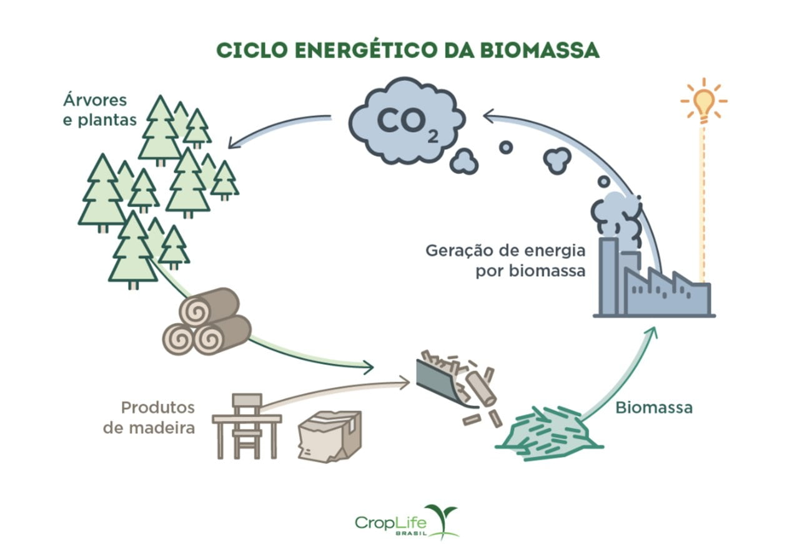

Você sabia que também é possível gerar energia usando matéria orgânica vegetal e animal?
Pois é! Essa energia pode ser chamada de biomassa ou bioenergia. Esses resíduos orgânicos podem gerar combustível, eletricidade e calor. Como fontes e insumos podem ser usados madeira, milho, cereais, o bagaço da cana-de-açúcar, vegetais como mandioca, amido e até mesmo o lixo que é produzido na cidade e os restos de alimentos podem ser transformados em biogás.
É através da biomassa que são produzidos o etanol, biogás, biodiesel e o carvão vegetal.
Destacamos aqui as vantagens e desvantagens do uso dessa fonte de energia:
Vantargens
Desvantagens
Energia renovável
Dificuldade no transporte e armazenamento dos resíduos
Baixo custo para produção
Eleva a ocorrência de chuva ácida
Alta capacidade de reaproveitamento
Desmatamento em grandes áreas
Não emite dióxido de carbono na produção
Menor eficiência calórica em comparação a outros combustíveis
Curiosidades:
-A Biomassa é uma fonte de energia primária, mas seus produtos servem como energia secundária.
- É uma forma indireta de energia solar. -Utiliza de processos como fermentação, digestão anaeróbica, pirólise, liquefação e transesterifação para aproveitamento energético.

Se você quiser saber mais sobre esse tipo de energia ou quer ir mais a fundo sobre o assunto, confira este vídeo abaixo: